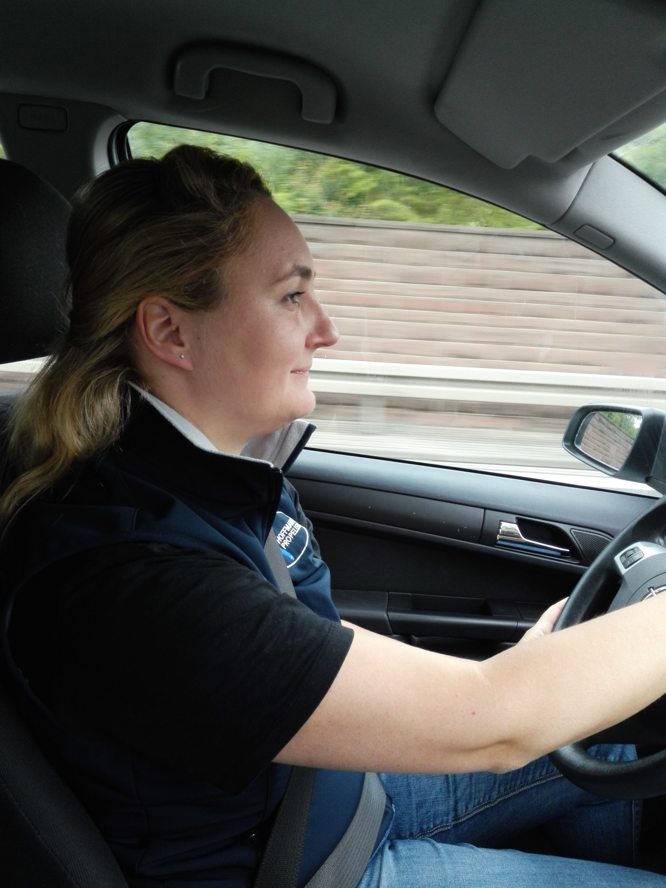
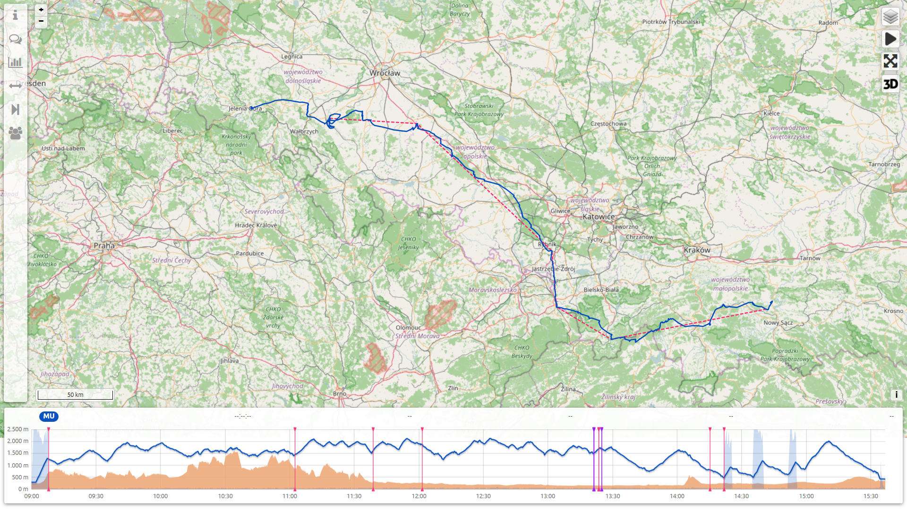
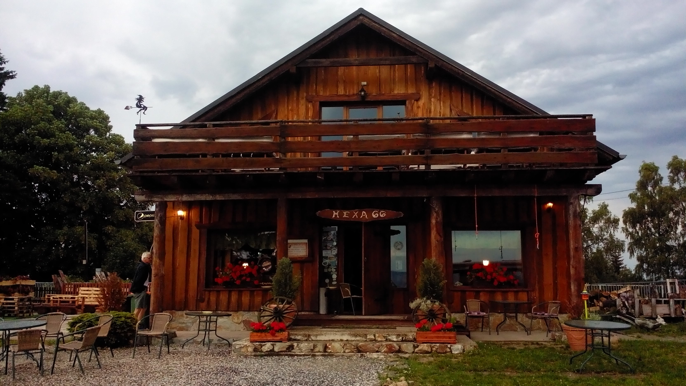
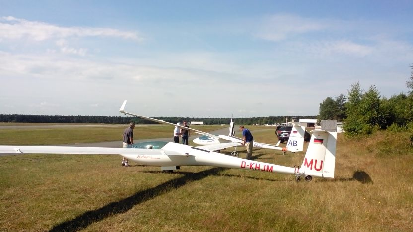

Euroglide 2016
2000km quer durch Europa
Team "MU" (Beatrice Bertram, Mathias Münch)
Was ist die Euroglide
- Eigentlich steht alles unter http://www.euroglide.nl
- Niederländische Erfindung
- Mischung aus Wandersegelflug und Wettbewerb
Euroglide 2016

Regeln (stark vereinfacht)
- Wettbewerbszeitraum: Zwei Wochen
- Vier Klassen: Segelflugzeuge, "High"/"Low" Turbos, Eigenstarter
- Beginn des Wettbewerbes für alle gleich, nicht unbedingt der erste Tag
- Ein gewisses Kontingent an Straßen- bzw. Motorkilometern
- Wer zuerst wieder in Venlo ist, hat gewonnen
Die Idee
- Tipp von Niederländern in Nitra 2013
- Trip ins Ungewisse
- Expeditions-Flair
Die Anmeldung
- Anmeldung auf der Web-Seite am 2. Dezember 2016
- Warten...
- 17. Januar 2016
- Hurra!
Dear Eurogliders,
We are pleased to announce that we have accepted all registration requests for Euroglide 2016. The list of participants is published on http://www.euroglide.nl/news.
php We ask you to complete your registration as soon as details are known.
In case you have to withdraw your subscription, please note we are able return the full subscription fee to until 31 March 2016.
After 31 March we cannot guarrantee a full refund.
With kind regards,
Euroglide 2016 team
Vorbereitung
Luftraum

Informationen vom Veranstalter
- Web-Seite mit wichtigen Links
- Großes ZIP-File mit Erläuterungen und z.B. Liste der polnischen Flugplätze
- Spezielle Karten mit Darstellung der relevanten Information
Luftraum
Luftraum Polen
- Ganz ganz viele Lufträume
- Größtenteils nur tage- oder stundenweise aktiv
- Information bei der Polish Air Navigation Services Agency
Abreise
Anfahrt

Anfahrt

Ankunft am Platz
Ausflug nach Gouda
Extreme Rumgammling

Erster Flugtag
Venlo - Finsterwalde
Zweiter Flugtag
Finsterwalde - Plock
Dritter Flugtag
Plock - Novy Sacz
Vierter Flugtag
Novy Sacz - Grunau
Grunau - Unterkunft

Grunau - Historischer Boden
Fünfter Flugtag
Grunau - Magdeburg
Sechster Flugtag
Mageburg - Oerlinghausen
Siebter Flugtag
Oerlinghausen - Venlo

Abschluss
Heimfahrt
Wertung
Die ersten werden die letzten seinAnders als gedacht
- Sieben Tage am Stück geflogen
- Keine Zeit für Ausflüge, Einkaufen o.ä.
- Organisation an den Flugplätzen ganz einfach
Zur Nachahmung empfohlen
- Organisierter Wandersegelflug
- Man ist nicht ganz auf sich alleine gestellt
- Ganz unterschiedliche Teams (Luxus-Eigenstarter, Turbos ohne Rückholer, echte Segelflieger)